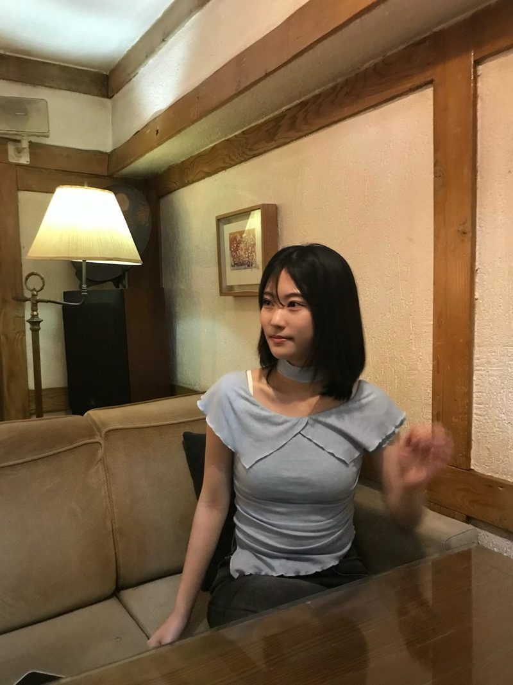

Hello,
I'm Sowon.
Computer Science student building interactive and immersive experiences that people feel, not just use.
Projects
About

Hi, I'm Sowon Oh, a Computer Science student at Kyung Hee University double majoring in Immersive Media. I work across frontend, backend and XR, and I'm most interested in how people interact with technology in immersive spaces.
Education & Experience
From product teams that ship to real users, to hackathons with international teammates, to research on interaction in XR.
-
Immersive Computing & Interaction LabUndergraduate Researcher · Kyung Hee UniversityResearch on interaction techniques in XR environments.detail TBD2026 – Present
-
XREAL 11thXR Club MemberBuilding XR projects in Unity with the XR club.detail TBD2026 – Present
-
IT's TIME 10thFrontend DeveloperBuilt and launched 사계단지 as an Apps in Toss mini app with real users.2026
-
AWS Cloud ClubBackend DeveloperStudied Spring and built authentication & authorization for PLANFLOW.2026
-
EPITECH ParisImmersive Media Summer ProgramGlobal AI Hackathon · Best Technical Project (LookItUp).Jun – Jul 2026
-
Kyung Hee UniversityB.E. Computer Science & EngineeringDouble major in Immersive Media.Mar 2025 – Feb 2029 (exp.)
Key Skills
Frontend
- React
- TypeScript
- JavaScript
- Vite · Tailwind
- Electron
Backend
- Spring Boot
- Spring Security
- Spring Data JPA
- PostgreSQL
- Express · FastAPI
XR & Interactive
- Unity · C#
- Three.js
- MediaPipe
- D3
AI & Cloud
- Amazon Bedrock
- LangChain
- OpenAI · Gemini API
- AWS S3 · Transcribe